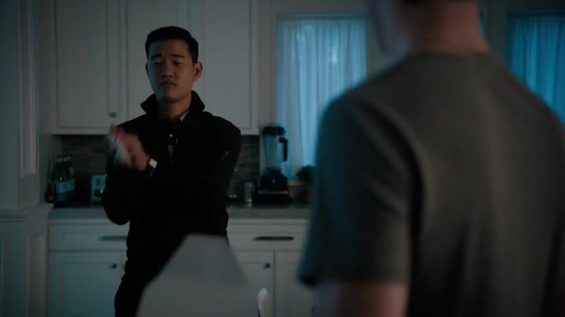

01
阿克斯家 / 厨房
先把公司放进嘴里

剧情事实Ben Kim 送来一车 YumTime 产品，两人聊起各自童年吃过的 Scrumpet。阿克斯品尝后觉得味道不对，扔掉点心。他已有接近百分之五的股份，开始把配方变化和企业经营联系起来；CEO Hutch Bailey III 得知持股消息后感到威胁。[1][2][3]
这一场为什么重要 · 个人解读
这次入口不是复杂财报，而是一个顾客可以直接辨认的经验。Ben 与阿克斯的成长背景让味觉记忆具有共同性，但“我吃过”本身仍不能回答治理和估值问题。阿克斯随后必须把私人不满翻译成对利润、薪酬与管理的判断，才可能推动董事会。
因此 → 怀旧成为治理行动的起点，而非已完成的商业论证。